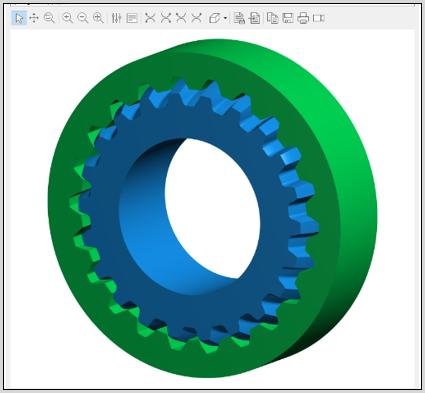

|
|
|


弧形齿
可以在轴/毂连接中定义轴的弧形齿几何形状。目前仅生成轴的 3D 几何。弧形齿定义的输入位于 选项卡中。这种花键可用作联轴器，以补偿轴的潜在轴向不对中。弧形齿轴几何形状的示例如下图所示。

图 38.6：花键/毂连接中的弧形齿轴
English Original
Curved tooth
It is possible to define the curved tooth geometry of the shaft in the shaft/hub connections. Currently only the 3D geometry of the shaft is generated. Inputs for the curved tooth definition are in the tab. Such splines can be used as couplings to compensate potential axial misalignment of the shafts. An example of a curved tooth shaft geometry is shown in the following figure.
Figure 38.6: Curved tooth shaft in spline/hub connection